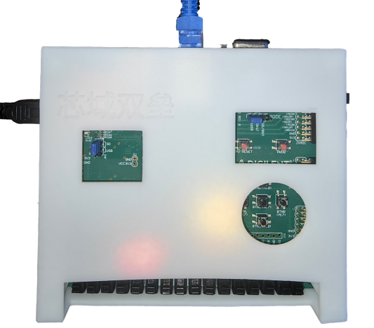

概览
后端检查中
远程未连接
POC 待机
结果待采集
芯域双垒 侧信道防御系统演示平台
面向侧信道防御成果展示，集中呈现 Cache 与 TLB 两类隔离防护能力、在线采集流程和性能对比结果。

运行状态
当前环境
能力展示
双域防护能力
展示缓存访问隔离策略对侧信道观测链路的削弱效果，并提供可视化性能对比。
展示基于进程域隔离的 TLB 分区防护效果，验证跨域干扰被限制在可控范围内。
单活远程连接
未连接
连接目标
此页面只负责连接与断开，不显示 SSH 终端。同一时间只允许一个目标保持连接。
Cache
未连接
远程 WSL 连接
TLB
未连接
FPGA SSH 连接
本地 WSL 实验
无防护 POC 控制台
恢复密钥--
Eve 状态未启用
阶段待机
窃听结果--
Alice
sender[idle] 等待发送消息
Bob
receiver[idle] 等待 Bob 解密输出
Mallory / Eve
observer[idle] 等待 Prime+Probe 与窃听输出
事件时间线
待机
攻击链路
- 启动 app / Bob
- Alice 通信
- Mallory 采样
- 恢复密钥
- 启动 Eve
- 窃听明文
有防护实验
数据采集
请先在连接页连接一个目标。
当前目标未连接
连接方式--
SSH 终端
远程输出
等待远程连接...
采集记录
最近采集数据
暂无采集数据
性能测试结果
Partition
等待采集
防护有效性
等待采集
SID 分离状态与 TLB 扰动幅度
Overhead
开销指标
Cache
无防护基线
Hit / Miss 访问周期
Process
等待采集
进程上下文切换
Thread
等待采集
线程上下文切换
Hackbench
等待采集